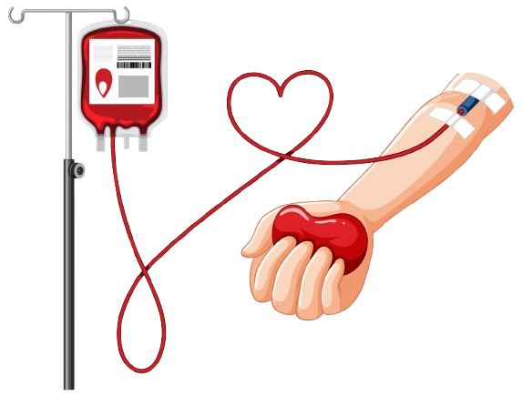
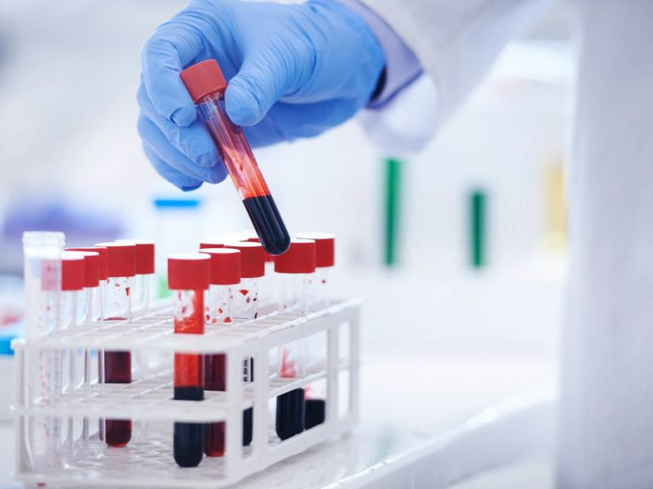
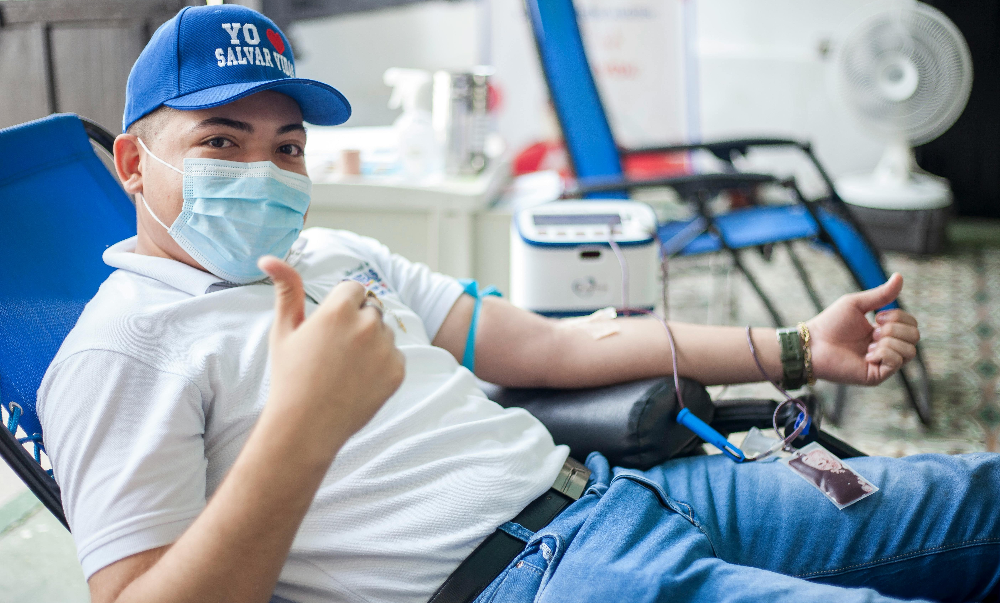

Your single blood donation can save up to 3 lives. Join our community of life-savers today!

If you need to request blood for a patient, click the button below to access our emergency blood request form.
REQUEST BLOOD NOW


Blood donation is a simple, safe way to make a big difference in people's lives. Your donation can help save lives in your community.
Regular blood donation helps reduce harmful iron stores, lowers risk of heart disease, and stimulates production of new blood cells.
A single donation can save up to 3 lives. Patients in trauma, surgery, cancer treatment, and blood disorders all need blood.
Before donating, you receive a free health screening including blood pressure, hemoglobin level, and pulse check.
There are several ways to donate blood to help save lives. Each type helps meet different medical needs.
The most common type where about a pint of whole blood is donated. Used for trauma, surgery, and anemia patients.
Plasma is collected through apheresis. Used for burn victims, shock, and bleeding disorders.
Platelets are collected through apheresis. Essential for cancer patients and those undergoing major surgery.
A Power Red donation collects concentrated red blood cells. Ideal for those with type O, O-, A-, or B- blood.

One of the most common blood types, frequently needed by hospitals.
Less common than A and O types, but still in regular demand.
The universal donor type that can be given to patients of all blood types.
The universal recipient type that can receive blood from any donor.
To donate blood, you must meet certain criteria to ensure the safety of both donors and recipients. Here are the basic requirements.

BloodMe Application 100% Free for Any Government and Private Hospital. Feel free to send us an email at info@bloodme.org, and we will implement a specialized system for each hospital.
Instant access to blood donors when you need them
No cost for setup or ongoing use
Tailored to your hospital's specific needs
Always know donor availability status
Enterprise-grade security for patient data

Regular Donor
"I've been donating blood for 5 years now. It's such a simple way to make a huge difference. The staff are always friendly and professional."

Stay updated with the latest blood donation campaigns and events in Sri Lanka
 EVENT
EVENT
This week-long event aims to collect 10,000 units of blood to address the current shortage in Sri Lankan hospitals.
Read more
The new mobile unit will make blood donation more accessible to busy professionals...

Read the inspiring story of how a single blood donation helped multiple patients...
Everything you need to know before donating blood for the first time...